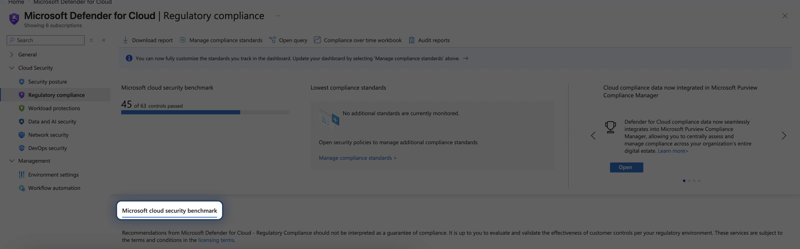

AZ-500 / SC-100 · Foundations
Microsoft Cloud
Security Benchmark
The prescriptive checklist of cloud-agnostic controls — measured by default in Microsoft Defender for Cloud, pre-mapped to CIS, NIST, and PCI.
PLAN → MONITOR → ESTABLISH
What MCSB isNETWORK INTELLIGENCE · FOUNDATIONS
Prescriptive, measurable controls
One control framework across every cloud
- Prescriptive, cloud-agnostic controls for securing workloads, data, and services across Azure, AWS, and GCP — measure once, report against many.
- Each control pairs a technology-agnostic principle (the what) with Azure- and AWS-specific implementation guidance (the how).
- Successor to the Azure Security Benchmark, rebranded to MCSB in October 2022 and widened from Azure-only to multicloud.
- It is controls, not a product — you don't deploy MCSB, you measure against it and enforce it with Azure Policy.
The structureNETWORK INTELLIGENCE · FOUNDATIONS
12 v1 control domains — the checklist
From the network in, to governance over all of it
NETWORK SECURITY
IDENTITY MANAGEMENT
PRIVILEGED ACCESS
DATA PROTECTION
ASSET MANAGEMENT
LOGGING & THREAT DETECTION
INCIDENT RESPONSE
POSTURE & VULN MANAGEMENT
ENDPOINT SECURITY
BACKUP & RECOVERY
DEVOPS SECURITY
GOVERNANCE & STRATEGY
v2 (preview) adds an Artificial Intelligence Security domain, 420+ Azure Policy mappings, and MITRE ATT&CK risk guidance.
How it's operationalizedNETWORK INTELLIGENCE · FOUNDATIONS
Applied by default · drives Secure Score
The benchmark behind the score
Grounded · AZ-500 · Defender for Cloud
Assessed continuously, not once
MCSB is the default standard assessed in Defender for Cloud, and its passing and failing assessments drive your Secure Score — here, 45 of 63 controls passed.
The loop is Plan → Monitor → Establish: plan to the controls, monitor compliance, establish Azure Policy guardrails.
portal.azure.com — Microsoft Defender for Cloud · Overview

Measure once, report against manyNETWORK INTELLIGENCE · FOUNDATIONS
Pre-mapped to CIS, NIST, PCI
The Regulatory compliance dashboard
portal.azure.com — Defender for Cloud · Regulatory compliance

Grounded · AZ-500 · Regulatory compliance
MCSB is the default standard
Every MCSB control is pre-mapped to CIS, NIST SP 800-53, and PCI-DSS — so one assessment populates many reports.
A mapping shows where an Azure feature can address an industry control — it does not by itself prove full compliance.
The framework familyNETWORK INTELLIGENCE · FOUNDATIONS
Where MCSB sits among the frameworks
MCSB is the checklist
- Zero Trust is the strategy · MCRA is the picture · MCSB is the checklist · WAF is the workload lens · CAF is the journey.
- When the exam asks how you measure and report security posture, the answer is MCSB in Defender for Cloud.
- MCSB vs RaMP: MCSB is the benchmark you measure against; the Rapid Modernization Plan is the prioritized project plan for getting there.
- SC-100 tests it twice: Domain 1 — design to MCRA and MCSB; Domain 3 — posture management with Defender for Cloud and MCSB.
RememberNETWORK INTELLIGENCE · FOUNDATIONS
The Microsoft cloud security benchmark in five rules
What the exam expects you to know
- 1 · MCSB is prescriptive, cloud-agnostic controls across Azure, AWS, and GCP — successor to ASB (Oct 2022).
- 2 · 12 v1 domains, network security through governance and strategy; v2 preview adds AI Security.
- 3 · It's controls, not a product — measure against it, enforce with Azure Policy.
- 4 · Default standard in Defender for Cloud's Regulatory compliance dashboard; it drives Secure Score.
- 5 · Pre-mapped to CIS, NIST, and PCI — measure once, report against many. The checklist in the framework family.
Hands-on · 1 of 2NETWORK INTELLIGENCE · FOUNDATIONS
Do this
Drill the dashboard behind the score
GOAL · See the MCSB-to-Secure-Score loop made concrete
- In Defender for Cloud, open Regulatory compliance and confirm MCSB is the default applied standard.
- Drill into one failing control family — Data Protection or Network Security.
- Read one failing assessment end to end: the control, affected resources, and remediation.
✓ DONE WHEN · You can trace one failing control to the resources moving your score
Hands-on · 2 of 2NETWORK INTELLIGENCE · FOUNDATIONS
Do this
Trace one control across frameworks
GOAL · Prove "measure once, report against many" on a single row
- Open the MCSB mapping spreadsheet and pick one control — for instance DP-1, discover and classify sensitive data.
- Write down its CIS, NIST SP 800-53, and PCI-DSS equivalents.
- Then score one domain — Identity Management — pass / partial / fail against what you actually run.
✓ DONE WHEN · One row maps cleanly to three frameworks, and one domain has a scored posture table